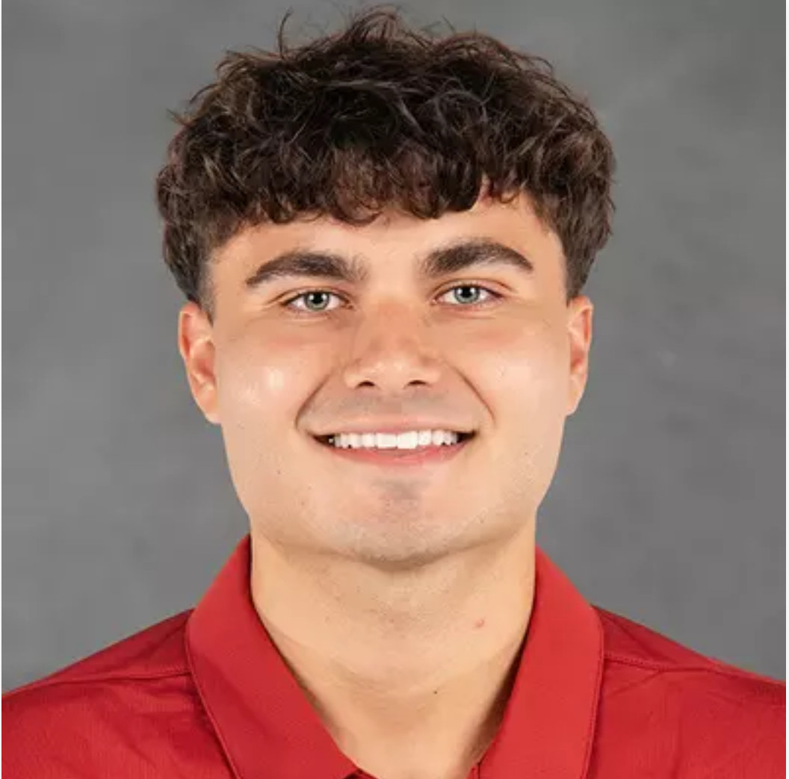

About Me
I am a software engineer and computer scientist with a passion for every facet of computing—from responsive full-stack web applications and API integrations to algorithms and interactive simulations. I specialize in turning complex logic into clean, intuitive, and user-friendly software solutions, whether designing dynamic multi-game console engines, deploying 3D graphics on the web, or structuring scalable database systems.
Technical Proficiencies
C# / .NET
C / C++
Python
JavaScript / Three.js
SQL & Relational DBs
REST APIs
HTML5 & CSS3
Assembly
Git / GitHub
Data Structures & Algorithms
OOP & Systems Design
Education
-
University of Indianapolis — Indianapolis, IN
Bachelor of Science, Major in Computer Science -
Fairfield High School — Fairfield, OH
Honors Diploma
Work & Engineering Experience
-
Robotics & Coding Instructor / Project Assistant Intern — Kids Explore Robotics (Carmel, Indiana)
Completed independent robotics and programming projects involving the design, construction, and programming of robotic systems. Selected and integrated physical components, sensors, motors, and other hardware while troubleshooting both hardware and software issues. Led and assisted with coding workshops and educational activities for K-12 students to teach fundamental STEM principles. -
Retail Sales Associate — Adidas Outlet (Monroe, Ohio)
Trusted keyholder to open and close the store. Communicated product choices based on customer needs, processed cash and card transactions, and resolved customer inquiries with courtesy and efficiency. -
Server / Food Runner — Topgolf (West Chester, Ohio)
Delivered exceptional hospitality in a fast-paced environment, collaborated with kitchen and floor staff for order accuracy, and multitasked to manage multiple guest areas during peak hours.
Campus Leadership & Coursework
- ACM Club (Association for Computing Machinery) — Member
- Programming Classes Completed: Introduction to Programming (Python), Intro to Object-Oriented Programming (C++), Computer Architecture & Parallel Computing (C++, Assembly), Data Structures and Algorithms (C++), Computer Algorithms (C++), Database Systems (HTML & Java), GUI & Game Programming (HTML, SQL, API JavaScript), Operating Systems (Python, C#, SQL), Data Encryption and Network Security (C++), Big Data Mining (Python & SQL).
- Languages: English (Fluent), Bosnian (Fluent)